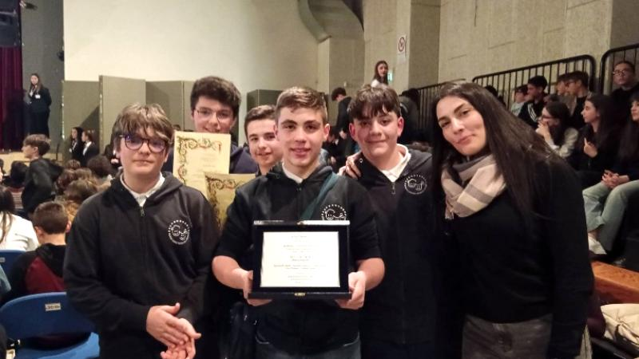

È un concorso nazionale promosso da DIESSE (Firenze) che invita gli studenti a confrontarsi con un'opera della letteratura europea attraverso due sezioni: Tesine (elaborati scritti) e Arte (modellini e opere creative).
La nostra Scuola Secondaria di I grado vi partecipa con risultati di grande rilievo, fino al primo premio nazionale.

Un elaborato che unisce modellismo, interattività con luci e musiche e una tesina di approfondimento, ispirato al romanzo di Robert Louis Stevenson.
Premiati: Nicolò Agostinello, Francesco Agostini, Gabriele Cinelli, Daniele Tucci, Iacopo Zarletti.
Forma espressiva efficace e a tratti poetica, con riflessioni apprezzabili sulla realtà. Classe 3ª.
Veronica Agostini, Veronica Bocchino
ApriTra pregiudizio e libertà, con citazioni efficaci dai testi di Chesterton. Classe 3ª.
Giorgia Bruni, Gabriele Onofri, Francesca Vittoria Pompei
ApriModellino fedele di Casa Beacon, con sapiente uso di materiali poveri e cura dei dettagli. Classe 2ª.
Iacopo Zarletti, Gabriele Cinelli
ApriStudenti coordinati dalla prof.ssa Martina Ciorba · Concorso nazionale DIESSE, Firenze.
Premiati: Aurora Curti, Greta Gagliazzo, Maria Paola Lini, Marta Silani.
Menzione d'onore per gli elaborati della sezione tesine dell'edizione 2026.
Foto e testo integrale dell'elaborato: inviameli e li aggiungo qui.
Premiato: Samuele Mercati.
Menzione d'onore nella sezione arte dell'edizione 2026.
Foto dell'opera: da inviare.
Premiate: Veronica Agostini, Veronica Bocchino.
Lavoro dalla forma espressiva efficace e a tratti poetica, che sviluppa riflessioni apprezzabili sulla realtà.
Foto e testo integrale: da inviare.
Premiati: Giorgia Bruni, Gabriele Onofri, Francesca Vittoria Pompei.
Tesina che esplora l'alternativa tra pregiudizio e libertà, con citazioni efficaci dai testi di Chesterton.
Foto e testo integrale: da inviare.
Premiati: Iacopo Zarletti, Gabriele Cinelli.
Modellino fedele di Casa Beacon, realizzato con sapiente utilizzo di materiali poveri e grande attenzione ai dettagli architettonici.
Foto del modellino: da inviare.